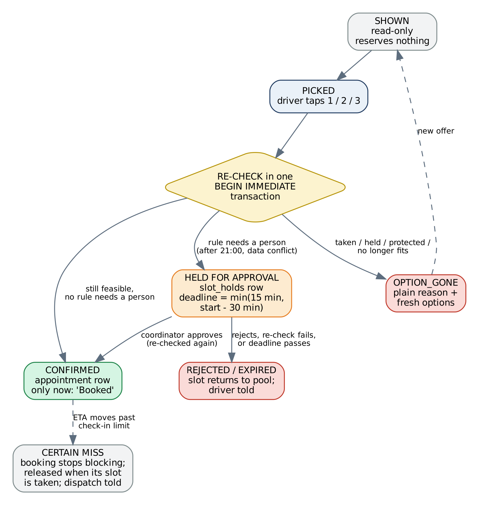

← all hand-ins · download the Word file
FDE ACADEMY | MINI PROJECT 2 | SETUHAUL LOGISTICS
Deliverable 2
Decision Register
Our answer, reason and evidence for each of the brief's 13 decisions, plus 8 decisions of our own
Each decision states the answer in one line, why, the evidence (scenario case, test or audit finding), the alternative we rejected, and who must sign it off. Evidence codes: C01-C14 are scenario cases (deliverable 4), T01-T12 are integrity tests (deliverable 5), F01-F36 are audit findings (deliverable 1), Q1-Q37 are grey-area questions (review pack).
Client: SetuHaul Logistics Pvt. Ltd. (FDE Academy challenge)
Snapshot: 4 August 2026, Jaipur DC and Gurugram Cross-Dock (Asia/Kolkata)
Version: 1.0 | 18 November 2026
Audience: FDE Academy reviewers; SetuHaul head of operations for sign-off
Contents
Register at a glance
Understand
D1. What must we collect before we show useful options?
D2. How does a conversation link to the right driver, shipment and appointment?
D3. How do we set the revised ETA and show how sure we are?
Decide
D4. What makes a slot feasible for this shipment?
D5. What does "available" mean while another driver is deciding?
Commit
D6. When does an option become a hold, request, reservation or confirmed booking?
D7. How do we order simultaneous requests when capacity runs short?
D8 (optional). When does the facility schedule recalculate, what is fixed, and what is the objective?
D9. How do we handle stale options, cancellations, duplicate messages and retries?
Fail safely
D10. What happens when no feasible slot exists?
D11. What do we say when the preferred slot is not granted?
D12. Which decisions need human approval or takeover?
Prove
D13. How do we prove the system did not double-book capacity?
Our own decisions
D14. What a slot means, and how long unloads are handled
D15. Architecture and cost
D16. Where the LLM is used
D17. Languages
D18. Protected capacity (earmarks)
D19. Swaps
D20. Proactive monitoring and outreach
D21. What "now" is
Policy parameters needing sign-off
| # | Decision | Our answer in one line | Key evidence |
|---|---|---|---|
| D1 | What to collect before showing options | Which shipment (only if evidence can't decide), a plannable arrival time, and the latest leave time if the driver mentions another pickup. Nothing the backend already holds. | C06, C09, C03; 2 questions in 13 cases |
| D2 | Linking a chat to driver, shipment, appointment | Phone gives the driver. Shipment by an evidence ladder, otherwise ask with a suggestion. Appointment is the current active one. | THR010 trace (C06) |
| D3 | Revised ETA and confidence | Gate-in beats everything, then the newest ETA record, then the plan. Confidence HIGH/MEDIUM/LOW, planned on the late edge, plausibility-checked. | MSG001, MSG005, ETA012 |
| D4 | What makes a slot feasible | A 15-point check in code, re-run at commit; 6 of the points also enforced by database triggers | SHP1014, SHP1015, SHP1016 checks |
| D5 | "Available" while another driver decides | Feasible for this truck now and not booked, held or protected. Showing reserves nothing. | C03 vs C07 race |
| D6 | Hold, request, reservation, confirmation | SHOWN, then PICKED, then CONFIRMED in one transaction, or HELD_FOR_APPROVAL with a deadline | C01, C06, T08 |
| D7 | Ordering simultaneous requests | First valid commit wins, but scarce capacity is earmarked for priority and deadline-limited trucks. Coordinator swaps never break a deadline. | 09:45 policy test; C10 |
| D8 | When the facility schedule recalculates | On every ETA update, check-in, dock event and cancellation, and every 15 minutes. Promises and in-dock trucks are fixed. | 09:16 re-plan; 09:45 replay |
| D9 | Stale options, cancellations, duplicates, retries | Re-check at commit; cancellations free capacity at once; dedupe; idempotency keys | C03, C13, C07, T05 |
| D10 | No feasible slot | Never invent one. Escalate with a complete record and computed what-ifs. Tell the driver not to come to the dock. | C14, ESC-0004 |
| D11 | Refusing a preferred slot | Say what happened, why, and what is still possible, in the driver's language | C03 (09:36), C10 (09:44) |
| D12 | Human approval or takeover | Eight triggers, each routed by role and channel health with an SLA | ESC-0001 to ESC-0004 |
| D13 | Proving no double booking | Five defence layers; a 10-driver race repeated 50 times; negative controls; a stress test | T01-T04, T10, T11 |
| D14 | What a slot means | A start window, gate-in by start + grace; unloads are time intervals that may run past the slot end | F04, F05, Q1, Q2 |
| D15 | Architecture and cost | One container plus managed Postgres for the pilot; AWS serverless as the scale path | Review pack, section 6 |
| D16 | Where the LLM is used | Reading words only, as a fallback after rules, with a strict JSON schema. Replies come from a catalogue. | C09, output guard |
| D17 | Languages | Deterministic detection; English, Hinglish (Latin script) and Hindi (Devanagari) templates | C06, C09, C12 |
| D18 | Protected capacity (earmarks) | Soft, 20-minute protection for HIGH/CRITICAL and deadline-limited trucks, enforced at commit | FCFS vs ours, 09:45 |
| D19 | Swaps | Coordinator only; trialled in a rolled-back transaction; never break a driver limit | C10 (swap refused), T12 |
| D20 | Proactive monitoring | Re-check every booking on every event; tell coordinators and drivers before they find out | 09:16 and 09:56 alerts |
| D21 | What "now" is | Every function takes an explicit as-of time; the scenario rewinds the snapshot and replays events | F15, deliverable 4 |
Answer. Ask the driver only for what the backend cannot know:
Which shipment, only if the driver has several live trips and the evidence cannot decide (see D2).
An arrival time we can plan on. A clock time ("11:30") is used directly. A delay ("late by one hour") is anchored to the driver's slot, or else the plan, and stated back with a one-tap correction rather than asked. A vague report ("thoda late") gets one question.
The latest time they must leave, only when they mention another pickup without giving a time.
Everything else (load, dock needs, priority, current booking, rules, other trucks) is looked up. Optional constraints such as "after 12" are used when offered and never demanded. After two unanswered questions a person takes over.
Three example chats with the fields we ask for
| Case | Driver said | What we asked | Why |
|---|---|---|---|
| C06, DRV004, 09:31 | "I will be late by 45 minutes." | Which trip, with a suggestion: "Your other truck is already at our gate, so I think you mean ORD-260804-020." | Two live trips; neither is in transit, so evidence cannot decide |
| C09, DRV010, 09:42 | "thoda late hoon bhai, traffic hai" | "Jaipur DC kitne baje tak pahunchoge? Jaise 11:30 likhiye" | No time and no number: nothing to plan on |
| C03, DRV013, 09:19 | "I am late by one hour." | Nothing. Stated back: "about 11:00 AM (planned 10:00 AM + 60 min). If that's wrong, just send the time." | A wrong guess costs one correction, not a missed slot: we plan on the late edge |
| Brief's example | "Tyre damaged... around 90 minutes late... after 7? another pickup tonight" | "By what time must you leave our gate?" | A downstream commitment with no time; it changes which slots are feasible |
Rejected alternative. Doc B asks before acting whenever the ETA is imprecise. That is safe, but it costs a driver on the road an extra message in most cases. We ask only when the answer changes which shipment we would book, or when there is no number at all. Sign-off: Head of operations (Q16, Q17).
Answer. The verified WhatsApp phone number gives the driver; identity never comes from message text. The shipment is resolved by an evidence ladder and stops at the first rung that gives exactly one trip:
An order or shipment reference in the message.
The conversation's shipment, if the conversation is mid-flow (waiting for an ETA, options shown, or a hold pending).
The only live trip.
A load attribute in the message ("heavy trailer", "reefer") matching exactly one trip.
State evidence that fits the message: "already at the gate" means the gated-in trip; "late" means the one trip in transit and not at our gate.
Otherwise ask, listing the trips, with an evidence-based suggestion.
The appointment is the shipment's current active booking.
Message-to-rows trace for the unclear case (THR010)
| Step | Data read | Result |
|---|---|---|
| MSG016 "I will be late by 45 minutes." arrives from +91-9000010004 | drivers.phone | DRV004 |
| Live trips of DRV004 | shipments | SHP1004 (WAITING, gate-in 09:25) and SHP1020 (ASSIGNED, Kota 13:30, ETA 18:00) |
| Any reference, attribute or single in-transit trip? | message, shipments.current_status | None. SHP1004 is at our gate, so a delay cannot refer to it. |
| Ask, with a suggestion | reply catalogue | "I think you mean ORD-260804-020" |
| "शाम वाला" (the evening one) | nlu.extract gives hint EVENING; the later of the two candidates | SHP1020 |
| Current appointment | appointments (is_current = 1, active) | APT1020, D2 18:00 |
Rejected alternative. Doc A resolves "heavy trailer" to trip 016 automatically. We do the same (an explicit attribute), but we also raise a non-blocking data-conflict notice because DRV007 shows on two moving trucks (F11).
Answer.
Source order. Gate check-in (HIGH, the truck is here), then the newest ETA record created no later than as-of (driver, warehouse or operations), then the plan (MEDIUM, never HIGH: F17).
Confidence from the words. A clock time is HIGH. "Around", or a delay anchored to a slot, is MEDIUM. A range or a failed plausibility check is LOW.
Plan on the late edge. HIGH +0, MEDIUM +15, LOW +30 minutes, or the end of a stated window. Release (earliest dock start) = late edge + 15 minutes gate-to-dock.
Use the early edge only to decide a certain miss, so we never release a slot the truck could still make.
Plausibility checks downgrade to LOW: the vehicle is busy on another trip (F12, F14); it "departed" before leaving another site (F13); it is not yet departed past its planned departure (the whole trip is still ahead).
Our rule applied to two messages
| Message | Read as | Confidence | Planned gate arrival | Earliest dock start |
|---|---|---|---|---|
| MSG001 "Reaching around 11:20. Any slot after 12?" | ETA 11:20, earliest start 12:00 | MEDIUM ("around") | 11:35 | 12:00 (driver's own limit) |
| MSG005 "I am late by one hour." | Planned 10:00 + 60 = 11:00, stated back | MEDIUM | 11:15 | 11:30 (offered D2 at 11:30) |
| ETA012 "between 12:30 and 13:00" (by phone, 09:55) | Window 12:30-13:00 | LOW | 13:00 | 13:15, after the slot window, so the booking is AT RISK and a proactive check is sent |
Answer. All of these must hold. They run in timeline.options() when options are shown and again inside the commit transaction:
| # | Check | Database guard too? |
|---|---|---|
| 1 | Shipment is not CANCELLED or COMPLETED | Yes (trigger) |
| 2 | Slot is at the shipment's destination facility | Yes (trigger) |
| 3 | Dock type: reefer load to a reefer door; over 25 t or HEAVY to the heavy door; standard loads keep off the reefer and heavy doors unless a coordinator overrides | Yes (trigger) |
| 4 | Load within the door's weight limit | Yes (trigger) |
| 5 | Slot status is OPEN | Yes (trigger) |
| 6 | No breakdown, maintenance or manual block overlaps the unload | Code (events change during the day) |
| 7 | No live booking on the slot. A dead booking (certain miss or invalid) may be released by this commit. | Unique index |
| 8 | No live hold by another truck | Partial unique index |
| 9 | Not earmarked for a truck of equal or higher priority | Code at commit |
| 10 | Start inside the window: max(slot start, release, driver's earliest) to before slot end | Code |
| 11 | Door free for unload + 10-min changeover, including trucks still unloading (overruns) | Trigger on intervals |
| 12 | Unload ends by facility close | Code |
| 13 | A start at or after 21:00 needs a coordinator | Code (approval) |
| 14 | Driver limits: latest start, latest unload end, latest gate-out | Code |
| 15 | ETA flagged as a data conflict needs a coordinator | Code (approval) |
Written check run on three shipments (T.options(..., limit=None); counts are rejected slot-checks)
| Shipment | Need | Rejected because | Result |
|---|---|---|---|
| SHP1014 (21 t, CRITICAL, 75 min) at 09:45 | Standard door rated 25 t | D1, D3 over weight (2); D5 reefer-reserved (1); D6 heavy-reserved (1); slots already booked (3); would end after close (2) | 17 feasible starts on D2 and D4, earliest D4 12:45 |
| SHP1015 (reefer dairy, 60 min) at 16:25 | D5 only | Reefer door required (5 standard/heavy doors); D5 maintenance 18:00-22:00 | 0, so escalate (D10) |
| SHP1016 (31 t, HEAVY, 90 min) at 09:45 | D6 only | Heavy door required (5); over weight on the standard doors (5); slot booked (1) | 6 feasible starts on D6, earliest 12:55 |
Answer. A slot is available to truck X now if it passes every check in D4 for X, given everything committed, held or earmarked at that moment. Showing options reserves nothing, so two drivers can be shown the same slot. The first valid commit wins, and the other driver gets a plain refusal with fresh options in the same reply.
State this needs: appointments (live bookings), slot_holds (decisions pending), slot_earmarks (protected capacity), dock_status_events, facility_checkins (who is in which dock, overruns), the resolved ETA, the driver's limits, and an explicit as-of time.
Evidence. C03 vs C07 at 09:36. DRV013 was shown D4 12:40 at 09:19; DRV006 was shown the same slot at 09:34. Both chose it in the same instant, on two threads. One booked; DRV013 was told "Sorry, Dock D4 at 12:40 PM was just taken by another truck. Nothing was booked for you yet," with three fresh options, and booked D1 11:30 a minute later.
Rejected alternative. Reserving on display: in a wave of 10 drivers each shown 3 options, display-holds would lock 30 slot-views while drivers type.
| State | Meaning | Who moves it | What the driver sees |
|---|---|---|---|
| SHOWN | Read-only list, valid 15 minutes | Workflow | "Nothing is booked until you choose. Reply 1, 2 or 3." (WhatsApp reply buttons) |
| PICKED | Driver tapped an option | Driver | Nothing yet: the commit runs in under a second |
| CONFIRMED | One transaction: idempotency check, re-check, release dead bookings, retire the old booking, insert, guards, history, outbox | Capacity layer | "Booked: Dock D2 at Jaipur DC, start 11:25 AM. Please be at the gate by 11:10 AM. Booking ref APT-N0003." |
| HELD_FOR_APPROVAL | A rule needs a person (start at or after 21:00, data conflict). slot_holds row with deadline = min(15 min, start - 30 min). | Capacity layer | "I've asked the coordinator... This is NOT confirmed yet. You'll hear by 9:48 AM." |
| CONFIRMED after approval | Coordinator approves; the approval is re-checked | Coordinator | "Confirmed: the coordinator approved Dock D1..." |
| REJECTED / EXPIRED | Coordinator rejects, the re-check fails, or the deadline passes | Coordinator / sweeper | Told plainly; slot returns to the pool |
| OPTION_GONE | Taken, held, protected, or no longer fits | Capacity layer | Plain reason + fresh options |

Lifecycle of an option. Only the green state is a promise.
Evidence. C01 (pick to confirmed, 08:23), C06 (held for approval at 09:33, approved and re-checked at 09:41), T08 (hold expires; slot returns), T09 (approval re-check refuses a now-infeasible slot).
Rejected alternatives. Doc B's "hold 3 minutes, then reply YES" (an extra turn while driving). Doc A's 5-minute hold after every pick (not needed: the transaction is the hold).
Answer, in four rules.
The commit is first-valid-wins, serialised by the database write lock. That is simple and predictable for drivers.
Scarce capacity is protected before it is shown. After every ETA update the facility planner (D8) plans all trucks that need a door and earmarks the planned slot of every HIGH or CRITICAL truck, and of every truck whose own limit leaves it few choices. A lower- or equal-priority driver is not shown an earmarked slot, and cannot commit it.
Promises are kept. A confirmed booking is moved only by a coordinator, through a swap that is trialled first and refused if it breaks any driver's limit.
Priority comes only from shipments.priority_code. "Urgent" in a message is logged and ignored, and the driver is told why (C10).
Policy tested on competing trucks (09:45 snapshot, 8 trucks needing a door; deliverable 4, "The scheduling tool")
| Policy | Trucks left with no dock today | Priority-weighted wait | CRITICAL wait | Longest HIGH/CRITICAL wait |
|---|---|---|---|---|
| First come, first served | 2 (deadline truck SHP1012, reefer SHP1015) | 1,040 | 60 min | 60 min |
| Earliest due date | 1 (SHP1015) | 1,200 | 60 min | 60 min |
| Strict priority | 1 | 1,310 | 0 min | 165 min (SHP1005, already in the yard) |
| Priority + repair (first answer) | 1 | 1,120 | 40 min | 65 min |
| Ours: exact branch and bound (engine) | 1 | 1,120 | 40 min | 65 min |
| Best of all 8! orders (benchmark) | 1 | 1,120 | 40 min | 65 min |
SHP1015 cannot be served by any policy (its only door is in maintenance); that is D10's job. Waits are measured from each truck's earliest dock start; SHP1006's 65 minutes include 25 it asked for ("any slot after 12").
Trade-off stated openly. Strict priority gives the CRITICAL load zero wait, but makes a HIGH truck that has been in the yard since 09:05 wait 165 minutes. Our plan delays the CRITICAL load by 40 minutes and cuts that to 65. Under all three weight sets tested (8:4:2:1, Doc A's 100:40:15:5, Doc B's 4:2:1:0.5) the plan is the same, so the trade-off is robust. The head of operations can still choose strict priority (Q22, Q24).
Answer.
Triggers: every recorded ETA, a gate check-in, a dock event, a cancellation, and every 15 minutes from the sweeper.
Fixed: trucks in a dock (until expected end, plus overrun buffers), breakdowns and maintenance, and every booking that is still feasible (promises).
Jobs: trucks with no booking, a certain-miss booking or an invalid booking.
Objective, in plain words, in order: every truck that can be served today gets a door; promises are kept; least priority-weighted waiting; fewest changes to what drivers were told.
Method: an exact branch and bound over the order in which trucks are given their earliest feasible door. Its first answer is a priority list (most constrained first within a priority) improved by pairwise repair, which the coordinator sees at once. The search then cuts any branch that cannot beat the best plan found, and stops at a node count (200,000), not a clock, so every run is reproducible. On the 09:45 snapshot it proves the plan optimal after 5,425 of 40,320 orders; exhaustive search agrees. Every truck gets a one-line reason (ready time, docks that fit, why it waits).
One replay. At 09:15 D3 broke down (DEVT001). At 09:16 the health monitor found APT1005 invalid (D3 broken, and 20.5 t is over D3's 20 t limit). The planner proposed D4 at 09:35 for SHP1005, the coordinator approved at 09:17, and the truck docked at 09:35.
Rejected alternative. (1) The heuristic alone: priority + repair reached the optimum here, but nothing proves it will on another day; the exact search proves it at little cost. (2) Doc A's branch-and-bound with per-option look-ahead and opaque offer scores: replaced by a search whose score is the same three plain measures and whose result comes with reasons a planner can read. CP-SAT (OR-Tools) is the documented step up when facilities or constraint types grow (deliverable 3).
| Situation | Rule | Replayed case |
|---|---|---|
| Stale option | Re-checked inside the commit; refused with a plain reason and fresh options | C03 at 09:36 (taken by another truck); T07 (breakdown after the option was shown) |
| Cancellation | Frees capacity at once; the driver is told not to travel and given the dispatcher's number | 10:10 SHP1019 cancelled; C13 at 10:12: "Shipment ORD-260804-019 and its appointment were cancelled by dispatch at 10:10 AM. Please don't travel..." |
| Duplicate message | Same external ID, or same driver and same normalised text (4+ words) within 10 minutes: no second reply, no second ETA record. Short replies like "1" are never deduplicated. | C07 at 09:35: wa-9009 (the THR009 retry) suppressed |
| Retry of a commit | Idempotency key = the driver's message ID; a replay returns the first result | T05: same key twice, one booking, replayed: true |
Answer. Never invent one. Say so plainly, tell the driver not to come to the dock until contacted, and hand a complete record to the right person by a working channel, with options a person could unlock already computed.
Escalation message (C14, 16:24): "I'm sorry - I can't find a reefer dock at Jaipur DC that your truck can reach today (Dock D5 maintenance 6:00 PM-10:00 PM; no new unloading starts after 9:00 PM without approval). I've passed your case to Neha Bansal (warehouse coordinator), who will contact you by 4:39 PM. Please don't go to the dock until they do."
Hand-off record ESC-0004 (summary)
| Field | Content |
|---|---|
| Who and what | DRV015, SHP1015 / ORD-260804-015, HIGH, reefer dairy, 15 t, 60-min unload, FreshBasket Jaipur |
| Driver said | "Evening traffic. ETA 6:30. Can the reefer unload tonight?" |
| ETA held | 18:30 HIGH, planned gate arrival 18:30, release 18:45 |
| Current booking | APT1015A D5 17:00, a certain miss (it was infeasible since 1 Aug; see F07) |
| Options tried | All five non-reefer doors rejected (REEFER_DOCK_REQUIRED); D5 blocked by maintenance |
| Recommendations (computed) | 1. Ask maintenance on D5 to start at 7:55 PM instead of 6:00 PM: the truck could unload 6:45-7:45 PM. 2. No slots are published for tomorrow (F23): park overnight with the reefer unit running, take the first D5 slot tomorrow, and check the e-way bill (it can be extended within 8 hours of expiry). 3. Divert to Gurugram Cross-Dock D3 (reefer): it closes at 21:00, and road time is not in the data. |
| Routed to | CON001 Neha Bansal (warehouse coordinator) by e-mail and dashboard. The failed night.shift@ address (F29) is never used. Respond by 16:39. |
| Driver told | No slot today; don't go to the dock until contacted |
Correction to Doc B. Its option "start after 21:00 with approval" cannot work: D5 is in maintenance until 22:00 and the site closes at 22:00.
Say what happened, without blame, and what is still possible, in the same reply. Two refusal messages from the run:
NOTE | Refusal 1: the slot was taken (C03, 09:36) "Sorry, Dock D4 at 12:40 PM was just taken by another truck. Nothing was booked for you yet. Fresh options: 1) Dock D1 - start 11:30 AM, unloading done by about 12:30 PM 2) Dock D2 - start 1:00 PM ... Reply 1, 2 or 3 to book." |
NOTE | Refusal 2: priority was claimed in the message (C10, 09:44) "Dock order follows the priority on the shipment record, not the message, so I can't move you ahead for urgency. These are the earliest slots that fit." (followed by the three earliest feasible options) |
A third variant exists for a slot protected by an earmark: "...is now reserved for a higher-priority load."
| Trigger (rule, not model) | Example | Goes to | Respond within | Agent behaviour meanwhile |
|---|---|---|---|---|
| Safety words (accident, injury, fire, police, chot...) | C12 at 10:05 | Shift manager, by phone + WhatsApp | 5 min | Stops scheduling talk; advises 112 |
| No feasible slot | C14 at 16:24 | Warehouse coordinator (night role if after 18:00; vacant roles skipped) | 15 min | Tells driver not to come to the dock |
| Start at or after 21:00 | RULE005 | Coordinator approval | Deadline min(15 min, start - 30) | Slot held; "NOT confirmed yet" |
| ETA data conflict (vehicle on another trip) | C06 (SHP1020's truck is in our yard) | Coordinator approval | Same | Same |
| Swap of a confirmed booking | C10 (proposal searched; none admissible) | Coordinator | 15 min | Current booking stands |
| Data conflict, non-blocking | DRV007 on two moving trucks (ESC-0002) | Coordinator / dispatch | 60 min | Driver served normally |
| Two unanswered questions, or driver asks for a person | Rule | Coordinator | 30 min | Stops asking |
| Output guard blocked a reply | Never sent to a driver | Ops alarm | Immediate | Generic safe reply |
| Penalties, compensation, disputes, hazardous or regulated loads | Brief's boundary list | Person always | n/a | Agent does not discuss |
Answer: five layers, no single one trusted alone.
Feasibility re-check inside one BEGIN IMMEDIATE transaction (the SQLite write lock).
Supplied unique indexes: one active booking per slot, one current active booking per shipment.
Partial unique indexes on live holds: one per slot, one per shipment.
Triggers: compatibility (trg_appt_guard), status (trg_active_must_be_current), and no overlapping time on a dock (trg_no_overlap). In Postgres the last one is EXCLUDE USING gist (dock_id WITH =, tstzrange WITH &&).
Idempotency keys and inbound dedupe for retries.
Test and result (deliverable 5): 10 drivers, one slot, the same instant, repeated 50 times. Every run had exactly one winner; 450 clean refusals; 0 raw errors reached a driver; 0 double bookings. With the guards removed, the same test double-booked all 10 drivers, which shows the test is capable of failing. 8 threads x 25 random bookings left 0 overlaps and 0 incompatible bookings. A deliberately broken feasibility function was stopped by the overlap trigger.
Answer. A slot is a start window: the truck may start any time inside it, and must gate in by slot start + grace (30 minutes at Jaipur). The door is busy from start to start + unload + 10-min changeover, which may run past the slot end if the door is free. A database trigger forbids overlapping time on one door. Why. The client's own plan books SHP1016 (ETA 10:30) into a 09:30 heavy slot and SHP1015 (ETA 17:30) into a 17:00 slot. That only works if slots are windows. Booking two whole slots for a 75-minute unload (Doc B) wastes 45 door-minutes each time. Sign-off: Warehouse planner (Q1, Q2, Q4).
Answer. Pilot on one small container (FastAPI wrapper around this workflow) plus managed Postgres, at about US$22-30 a month. The same engine runs in tests and production. Doc A's AWS serverless design is the documented path when more facilities need more writers (deliverable 3, section 9). Why. About one message a minute at peak. The fixed floor of the serverless stack is about US$170 a month before traffic. The integrity proof must run on the engine we deploy.
Answer. Only to read a message the rules cannot parse, returning a strict JSON fact sheet that code validates (times within as-of -1 h to +24 h, known intents only). The LLM never chooses a shipment, a slot, a priority or a next step, and never writes to the database. Replies come from a reviewed catalogue in three languages, and the output guard checks every dock and time against the evidence. Evidence. All 13 scenario cases and the Hindi/Hinglish variants were read by rules, with no LLM. During development the output guard stopped one reply that named doors not yet in the evidence. Cost. At Claude Haiku 5.5 list prices (US$0.10 / 0.50 per million input / output tokens), even calling the LLM on every message would cost cents a month. We choose rules first for determinism and testability, not cost.
Answer. Detection uses the Unicode script share (Devanagari over 30% means Hindi), then a Hinglish word list (2 or more hits means Hinglish), otherwise English. Short replies ("1", "ok") keep the conversation's language. Templates exist in English, Hinglish (Latin script, as drivers type) and Hindi (Devanagari). Times are always 12-hour with AM/PM, and dock codes are kept literally because drivers screenshot them.
Answer. An earmark is a soft, 20-minute protection of one slot for one planned truck. It is created by the planner for HIGH/CRITICAL trucks and for any truck with a driver limit, enforced when options are shown and at commit, and never a promise to the protected driver. Why. It closes the gap between "first come" and "priority" without the cost of look-ahead. In the 09:45 policy test, first-come-first-served left the deadline truck SHP1012 with no door that let it leave by 13:30; our plan served it, and in the live run each HIGH or CRITICAL driver's first option was the planner's slot.
Answer. After a HIGH/CRITICAL truck books a slot more than 30 minutes after its release, the planner searches lower-priority bookings it could take. Each candidate swap is executed inside a transaction that is always rolled back, so the coordinator sees exact new times. Swaps that break any driver limit are refused. A proposal needs a gain of at least 30 minutes and 100 weighted points. If approved, both bookings move in one transaction, and both drivers are told. Evidence. In C10, the search found SHP1012's slot, but moving SHP1012 would break its 13:30 gate-out, so the swap was refused and the CRITICAL load kept 12:20. T12 shows a failed swap changes nothing.
Answer. Every dock event, ETA update, check-in and cancellation re-checks all affected bookings: CERTAIN_MISS releases with a dispatcher notice; INVALID re-plans; AT_RISK sends the driver a WhatsApp utility template ("Are you on track? 1) On time 2) Running late 3) Need help"). Evidence. At 09:16 the reefer booking was flagged infeasible, seven hours before the driver's message. At 09:45 SHP1018's booking was released: its truck had not left the origin, so its earliest arrival (13:20) was past the slot's check-in limit, and its dispatcher was told. At 09:56 SHP1017's booking was flagged at risk and a check-in was sent.
Answer. Every function takes as_of. Rows created after as-of are invisible to it. The scenario rewinds a copy of the snapshot to 08:20 and replays each later row at its own time. Why. Rows in the snapshot run from 07:10 to 16:30 (F15). A query "at 09:45" that sees a 16:25 ETA is answering a different question.
These values live in one file (setuhaul/config.py). Changing one changes the whole system; nothing is hard-coded elsewhere.
| Parameter | Value | Meaning | Who signs off |
|---|---|---|---|
| GATE_TO_DOCK_MIN | 15 | Gate checks and yard drive, for a truck from the road | Warehouse planner |
| YARD_TO_DOCK_MIN | 10 | Call-to-dock for a truck already in the yard | Warehouse planner |
| DOCK_CHANGEOVER_MIN | 10 | Between one truck leaving and the next starting | Warehouse planner |
| OVERRUN_BUFFER_MIN | 10 | Extra time assumed once an unload passes its expected end | Warehouse planner |
| ETA buffers HIGH / MEDIUM / LOW | 0 / 15 / 30 min | Late edge we plan on | Head of operations |
| OFFER_VALID_MIN | 15 | An option older than this is re-checked before booking | Product owner |
| Approval deadline | min(15 min, start - 30 min) | When a held option expires | Warehouse coordinator lead |
| EARMARK_TTL_MIN | 20 | How long protected capacity stays protected | Head of operations |
| MAX_OPTIONS_SHOWN | 3 | Fits WhatsApp's three reply buttons | Product owner |
| MAX_CLARIFICATIONS | 2 | Then a person takes over | Head of operations |
| WAIT_WEIGHT | CRITICAL 8, HIGH 4, NORMAL 2, LOW 1 | Cost of a minute of waiting by priority | Head of operations |
| Swap thresholds | 30 min gain and 100 weighted points | When a swap is worth asking a coordinator | Head of operations |
| ALLOW_STANDARD_ON_HEAVY / REEFER | Off | Flex-dock policy | Warehouse planner |
| DUPLICATE_WINDOW_MIN / MIN_WORDS | 10 / 4 | Retry detection | Product owner |